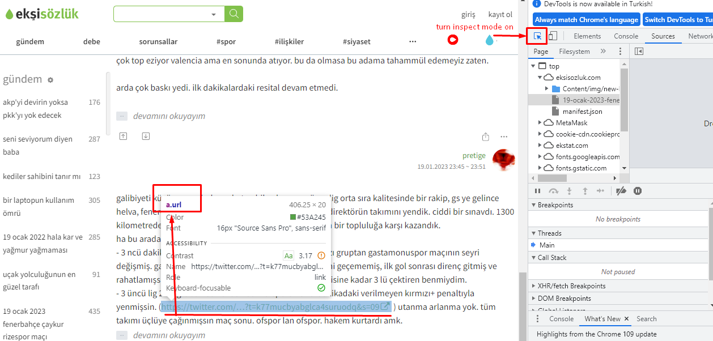
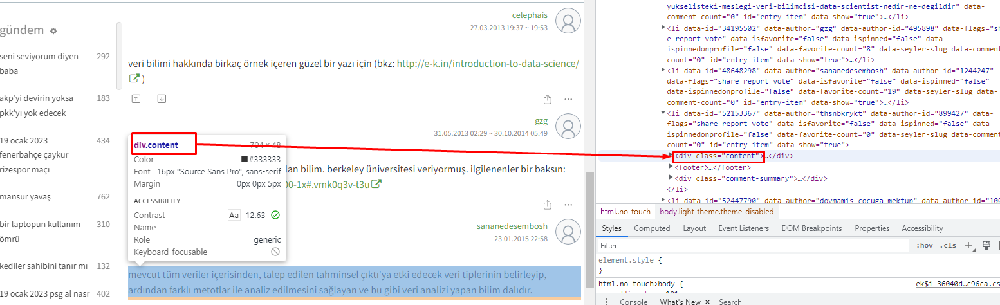
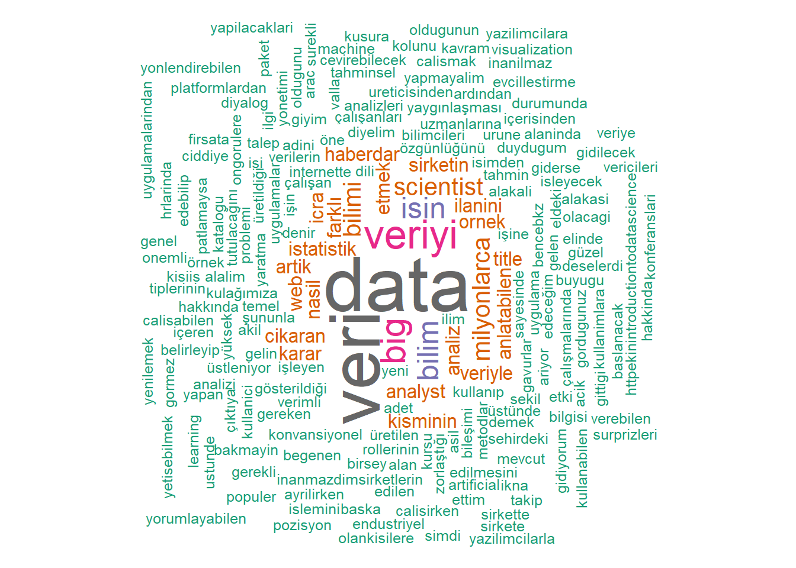

![]()
library(rvest)
library(dplyr)
library(tm)
library(stopwords)
library(wordcloud)
library(wordcloud2)Introduction
In this post, we will delve into harvesting a web page, Ekşi Sözlük. This process won’t include the automation of the process. Yet, a completed web application for harvesting Ekşi Sözlük is available.
Ekşi Sözlük is a reddit-like satirical web site where users share their ideas on certain topics in Turkish. Our target topic is “veri bilimi” (a.k.a. data science in English). The R packages that we use in this post are as follows:
Processing
“Rvest” is a package for web scraping and harvesting which was developed by Hadley Wickham. He has stated that he was inspired by a few of the python libraries such as “beautiful soup” and “RoboBrowser”.
First things first; we start by introducing the webpage that we want to harvest.
html <- read_html("https://eksisozluk.com/veri-bilimi--3426406")Rvest allows us to collect any type of HTML tag from the current page. Let’s suppose we would like to collect all the links in a topic page. First, go to the page and press F12 to open the “devtools” tab. Then turn inspect mode on. Hover on an item and check the node name for a random link. This process is shown below.

Then we use the functions html_nodes() on the node name and html_attr() on “href” HTML tags. This will get all the href attributes with the node name “a.url” on the given link and turn them into a list:
links <- html %>% html_nodes("a.url") %>% html_attr("href")
links[1] "http://e-k.in/introduction-to-data-science/"
[2] "https://www.edx.org/course/introduction-big-data-apache-spark-uc-berkeleyx-cs100-1x#.VMK0q3v-t3U"If we would like to collect all the entries on the given page, we will need the div attribute name for entries (also shown below).

Now, we will use the function html_text() to collect the entries in these div attributes. There are about 10 entries some of which are quite long. Therefore, let me print only the first three entries via the head() function.
entries <- html %>% html_nodes(".content") %>%html_text()
#Let's see the first three entries:
head(entries, 3)[1] "\r\n internette milyonlarca veri var. bu milyonlarca veriyi işleyen milyonlarca uygulama var. işte bu uygulamalar sayesinde var olan veriyi kullanıp yeni veri uygulamaları yaratma işine veri bilimi denir.\r\n "
[2] "\r\n istatistik ile cok alakali bilim. (bkz: veri madenciligi)\r\n "
[3] "\r\n bana veri olmadan çalışan bir adet bilim türü gösterildiği anda varlığını ve özgünlüğünü kabul edeceğim ilim kategorisi.yoksa şununla yarışır bence:(bkz: deney bilimi) *" Now that you have all the entries in a page, it is easy to carry out a text analysis with it. Let’s simply create a word cloud. Here we’ll use the wordcloud and tm packages. Functions in tm package works on a corpus type input. Hence, we change our entry list to a corpus using Corpus() and VectorSource() functions.
#turn entries into corpus
entries<-Corpus(VectorSource(entries))As we do not want unnecessary items in our word cloud, we will get rid of numbers, punctuation marks and spaces with removeNumbers(), removePunctuation(), and stripWhitespace().
Also all letters will be transformed into lower case characters. We use tm_map() function to apply all the above mentioned functions on the corpus items.
#apply several functions such as remove punctuation or numbers etc.
entries <- entries %>%
tm_map(removeNumbers) %>%
tm_map(removePunctuation) %>%
tm_map(stripWhitespace)
entries <- tm_map(entries, content_transformer(tolower))Of course we would like to remove all the words that do not contribute to the context such as linkers, conjunctions, articles etc. For that, we can use the package stopwords. Turkish stopwords are defined in it and if you like you can add some other words to remove from your corpus via the append() function. We need to unlist() our corpus to apply removeWords() on it.
tr_stopwords<-stopwords::stopwords("tr", source = "stopwords-iso")
tr_stopwords<-append(tr_stopwords, c("bkz","var","vardir","icin", "iste", "işte","rn","crn"))
entries<-unlist(entries)
entries <- removeWords(entries, words=tr_stopwords)Actually, right now our corpus is ready, filled with all the meaningful words in the entries. However, to create a word cloud we need it as a frequency table. That’s because a word’s frequency will be used while determining its colour and size. To get a frequency table, we need a term matrix first. Following lines of codes will do the magic in this regard:
#turn into a matrix
term_matrix <- as.matrix(TermDocumentMatrix(entries) )
#frequency table:
word_freqs <- sort(rowSums(term_matrix),decreasing=TRUE)
word_freqs <- data.frame(word=names(word_freqs),freq=word_freqs )We will use two different packages for creating our word clouds. Initially, the classic word cloud takes the column names in the frequency table as words and freq arguments. Other arguments are also defined next to them as notes:
wordcloud::wordcloud(words = word_freqs$word,
freq = word_freqs$freq,
min.freq = 1, ## freqs lower than that wonW't be in the cloud
max.words=200, ## Total number of words in the cloud
random.order=FALSE, ## words will be ordered according to their freqs.
rot.per=0.35, ## rotation degree
colors=brewer.pal(8, "Dark2")) ## some custimization for colors
The second option is a more modern alternative. It is developed based on the JS framework with the same name. It gives you the opportunity to hover over the words and see their frequencies. Also, you can decide on a shape among several options such as 'circle', 'diamond', 'triangle-forward', 'triangle', 'pentagon', and 'star'. Yet, some of these features won’t be available if you want your cloud in .png format. That is because wordcloud2 package provides us with clouds in HTML format which makes it easier for web page embedding but harder for saving on your local disk as .png or any other format.
wordcloud2::wordcloud2 (word_freqs,
size = 0.4, ## this is basically zooming in the cloud. default is 1
shape = "star",
color='random-light', ## another option is 'random-dark'
backgroundColor="black" ) ## another option is 'white'Conclusion
There are many ways to use Rvest and scrap a website. We tried one of them in this post. In the end you can do many things with your output such as content analysis, clustering, sentimental analysis or even survival analysis. Here, in this post, we do not bare any pragmatic purposes so focused on creating something fun and eye-catching: word clouds. Also, scraping depends highly on your computer’s processor and the number of pages you want to scrap. If you want to automate this process, it may take some time to complete. You can find my Rshiny web application automating specifically the steps discussed here.
Although we haven’t mentioned here, Rvest works in alignment with the polite package. It allows you to scrap a web page in a polite way with permissions and greetings. The motto of the package polite sums it all for itself: Be responsible when scraping data from websites by following polite principles: introduce yourself, ask for permission, take slowly and never ask twice.